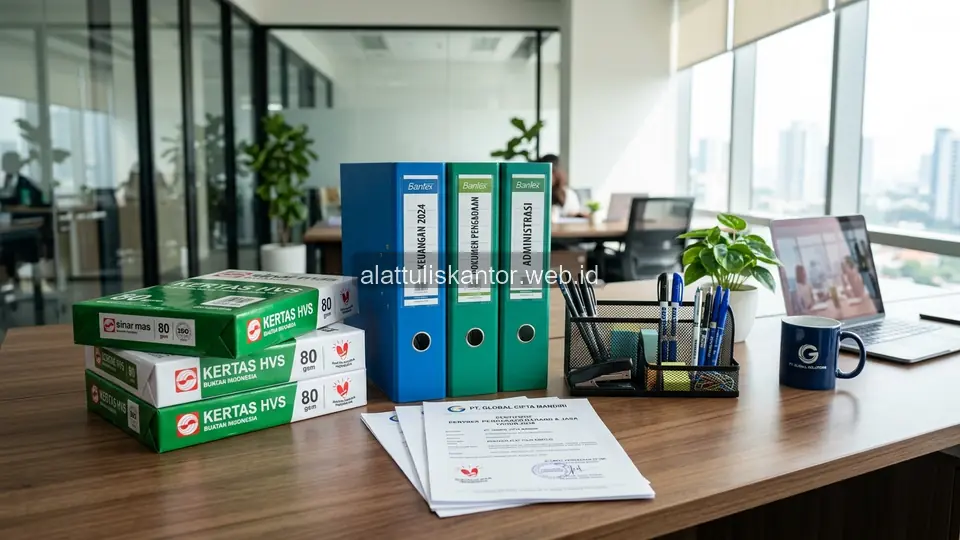

Mencari kategori alat tulis kantor dengan Tingkat Komponen Dalam Negeri (TKDN) tinggi yang benar-benar lolos kualifikasi LKPP menjadi kebutuhan penting bagi pejabat pengadaan yang ingin menyusun dokumen tender dengan spesifikasi realistis dan kompetitif. Di sisi lain, kekhawatiran akan temuan audit BPK akibat mark-up Harga Perkiraan Sendiri (HPS) belanja ATK juga kerap menghantui bendahara dan pejabat pengadaan, terutama jika HPS yang disusun tidak didukung data survei harga yang memadai.
Artikel ini membahas kategori produk ATK dengan TKDN tinggi yang umum tersedia di e-katalog LKPP, sekaligus tips menyusun HPS yang wajar agar terhindar dari temuan audit. ATK Prima Distribusi, sebagai penyedia produk ATK dengan TKDN terverifikasi, siap membantu instansi Anda melalui WhatsApp di 088989643555.
Fakta Regulasi: Pengadaan ATK instansi pemerintah diwajibkan mengutamakan Produk Dalam Negeri (PDN) yang ber-sertifikat TKDN sesuai batas minimal yang ditetapkan pemerintah untuk mencegah risiko sanksi audit dan mempercepat penyerapan anggaran.
Ringkasan Kategori ATK TKDN Tinggi dan Tips Menyusun HPS Wajar
Kategori alat tulis kantor dengan TKDN tinggi yang umumnya mudah ditemukan di e-katalog LKPP meliputi kertas HVS produksi lokal, map dan kearsipan berbahan lokal, serta sebagian besar produk pulpen dan pensil dari produsen dalam negeri yang telah lama beroperasi. Untuk menyusun HPS wajar dan terhindar dari temuan audit BPK, gunakan minimal tiga sumber referensi harga (termasuk harga e-katalog terkini), dokumentasikan metodologi penyusunan HPS secara tertulis, dan hindari menggunakan harga dari satu sumber tunggal tanpa pembanding yang jelas.
Mengapa Memilih Produk TKDN Tinggi Menguntungkan Instansi
Selain memenuhi kewajiban preferensi produk dalam negeri sesuai mandat pemerintah, memilih produk ATK dengan TKDN tinggi juga sering kali memberikan keuntungan praktis bagi kelancaran operasional instansi:
- Pasokan lebih stabil: Produsen dalam negeri memiliki rantai pasok lokal yang tidak memicu keterlambatan akibat hambatan impor atau kontainer internasional.
- Harga cenderung lebih stabil: Produk dengan nilai TKDN tinggi tidak mudah terpengaruh fluktuasi nilai tukar mata uang asing yang berfluktuasi secara dinamis.
- Kemudahan purna jual: Proses purna jual, retur produk cacat produksi, atau klaim garansi jauh lebih cepat karena pabrik dan jaringan distributor resmi berada di dalam negeri.
Kategori Produk ATK dengan TKDN Tinggi yang Umum Tersedia
Kertas HVS dan Produk Turunan Kertas
Industri kertas dalam negeri sudah cukup mapan dan berdaya saing global, sehingga banyak produk kertas HVS, kertas buram, dan produk turunannya memiliki nilai TKDN tinggi karena bahan baku utama serat kayu dan proses manufaktur dilakukan sepenuhnya di pabrik-pabrik lokal Indonesia.
Map, Ordner, dan Perlengkapan Kearsipan
Produk pengarsipan seperti map kertas, ordner karton, serta folder dokumen umumnya diproduksi oleh pabrik lokal dengan tingkat TKDN yang relatif sangat tinggi, mengingat proses manufakturnya tidak terlalu bergantung pada komponen impor kompleks.
Pulpen dan Alat Tulis Dasar dari Produsen Lama
Beberapa merek pulpen, pensil, dan alat tulis dasar yang sudah lama beroperasi dan membangun pabrik di Indonesia memiliki fasilitas produksi lokal bersertifikat TKDN tinggi, meskipun tetap perlu diverifikasi per spesifikasi merek karena bervariasinya komponen tinta atau isian yang digunakan.
Tabel Estimasi TKDN per Kategori Produk ATK
| Kategori Produk | Estimasi Ketersediaan TKDN Tinggi | Rekomendasi untuk Pengadaan |
|---|---|---|
| Kertas HVS & Turunannya | Tinggi | Prioritaskan sebagai item utama pengadaan PDN |
| Map & Kearsipan | Tinggi | Sangat mudah memenuhi syarat sertifikasi TKDN |
| Pulpen & Alat Tulis Dasar | Sedang, bervariasi per merek | Wajib verifikasi sertifikat resmi per merek/tipe |
Tips Menyusun HPS yang Wajar agar Terhindar Temuan Audit BPK
- Gunakan minimal tiga sumber referensi harga: Pastikan menyertakan cetak bukti harga yang tercantum pada sistem e-katalog LKPP terkini sebagai pembanding utama.
- Dokumentasikan metodologi secara tertulis: Catat secara sistematis tanggal pelaksanaan survei pasar, badan hukum toko/distributor penyedia data, serta personel yang bertanggung jawab.
- Hindari sumber tunggal tanpa pembanding: Jangan pernah menggunakan surat penawaran tunggal dari satu penyedia tanpa didampingi pembanding harga pasaran yang valid.
- Gunakan data harga yang akurat dan baru: Sesuaikan HPS dengan kondisi dinamika pasar, serta hindari penggunaan data harga lama yang sudah kadaluwarsa lebih dari 6 bulan.
Studi Kasus: Terhindar dari Temuan Audit Berkat Dokumentasi HPS yang Rapi
Sebuah dinas di pemerintah kabupaten sempat menerima catatan dari tim audit internal terkait HPS belanja ATK yang dianggap tidak didukung data survei yang memadai pada tahun anggaran sebelumnya. Catatan tersebut memicu evaluasi mendalam pada sistem pengadaan instansi.
Setelah memperbaiki metodologi penyusunan HPS dengan mendokumentasikan tiga sumber referensi harga secara tertulis, termasuk cetak layar (screenshot) harga e-katalog pada tanggal survei yang valid, dinas tersebut berhasil mempertahankan akuntabilitasnya. Pada audit tahun anggaran berikutnya, instansi tidak lagi menerima catatan serupa dari BPK karena metodologi penyusunan HPS dapat dipertanggungjawabkan secara hukum dan ilmiah.
Hasil Nyata: Kelengkapan dokumen survei harga dan kepatuhan sertifikat TKDN terbukti 100% membebaskan instansi dari risiko sanksi administrasi maupun potensi kerugian negara saat pemeriksaan BPK.
Cara Bermitra dengan Penyedia ATK TKDN Tinggi untuk Instansi Anda
Untuk mempelajari layanan pengadaan ATK dengan produk TKDN terverifikasi yang siap memenuhi standar e-katalog dan tender LPSE, Anda dapat meninjau informasi lengkap pada halaman katalog produk ATK lengkap. Anda juga dipersilakan untuk mengenal profil legalitas dan rekam jejak perusahaan kami melalui halaman tentang kami sebagai pertimbangan resmi proses evaluasi penyedia di instansi Anda.
Pertanyaan yang Sering Diajukan (FAQ)
Kesimpulan
Memilih kategori produk ATK dengan TKDN tinggi dan menyusun HPS yang wajar dengan dokumentasi yang rapi adalah dua langkah penting yang saling melengkapi untuk memastikan proses pengadaan ATK instansi berjalan sesuai regulasi dan terhindar dari temuan audit BPK di kemudian hari.
Butuh referensi produk ATK TKDN tinggi dan bantuan menyusun HPS yang wajar? Hubungi tim ATK Prima Distribusi via WhatsApp di 088989643555 untuk konsultasi gratis.